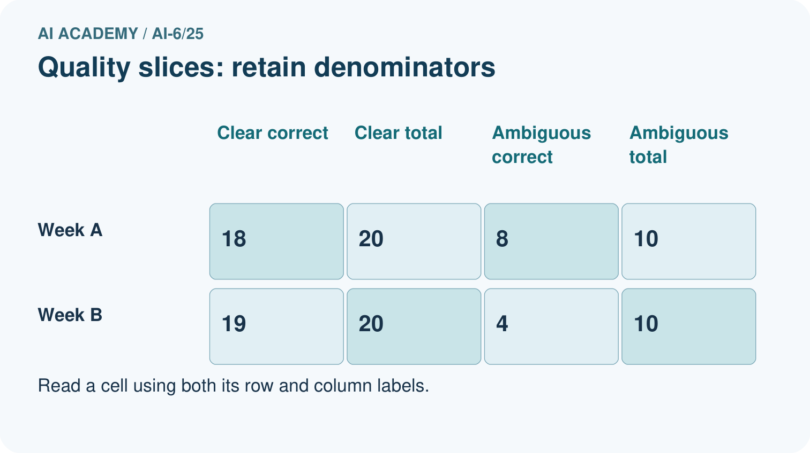
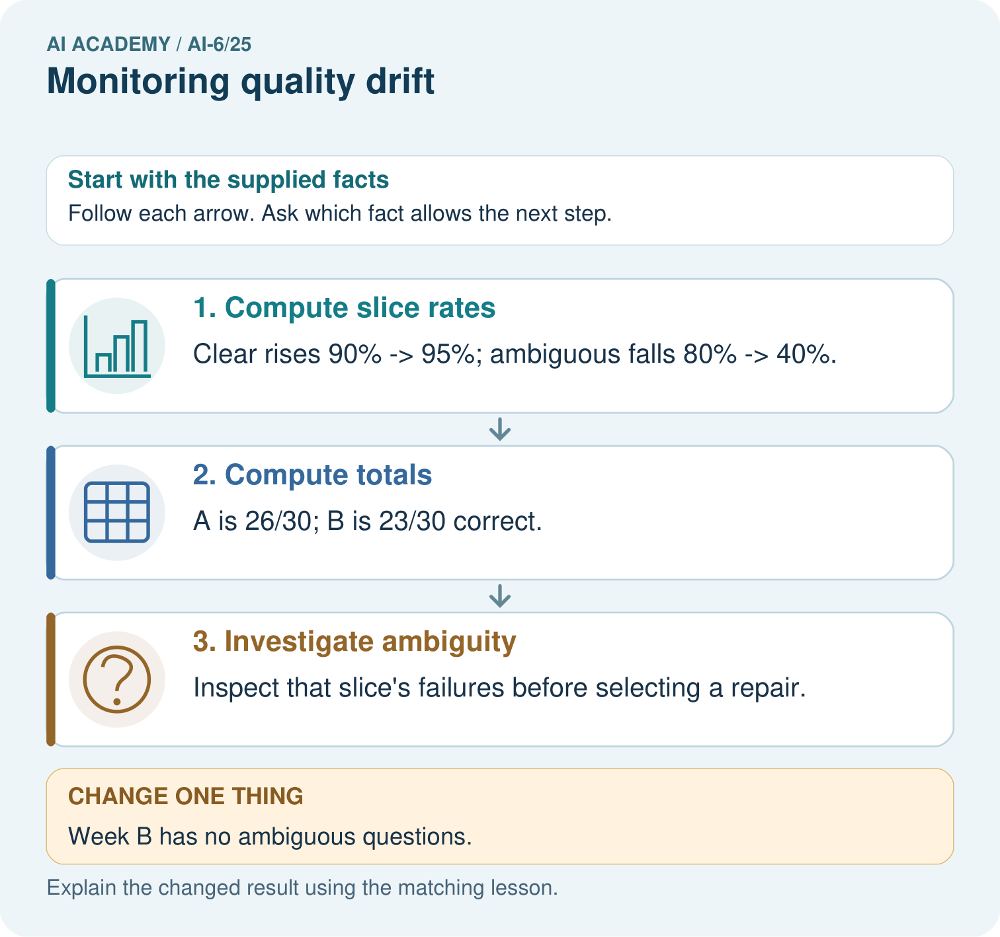
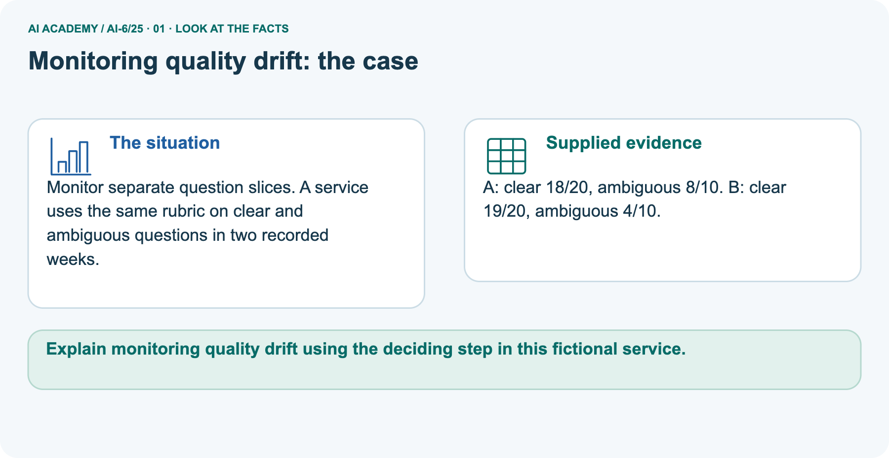
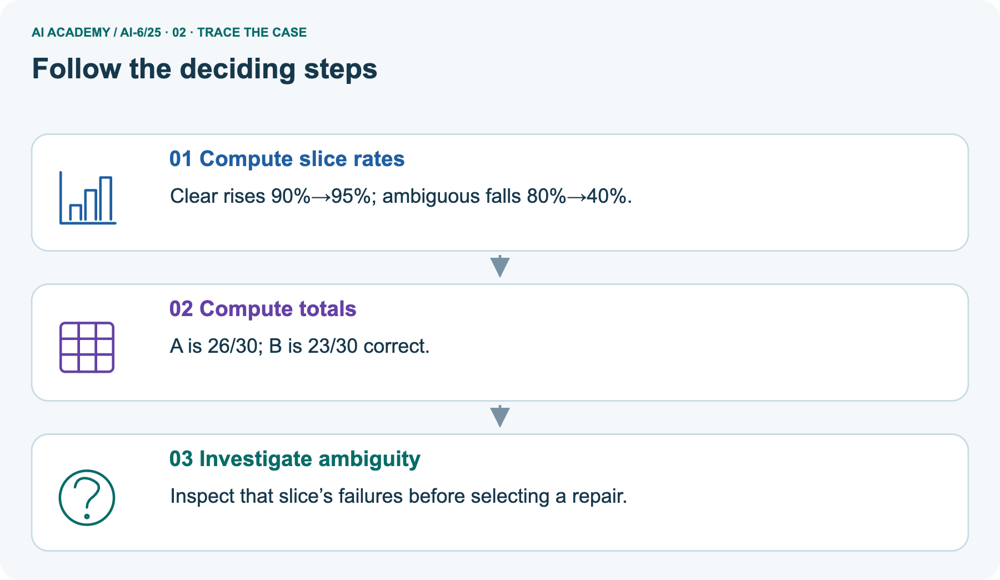
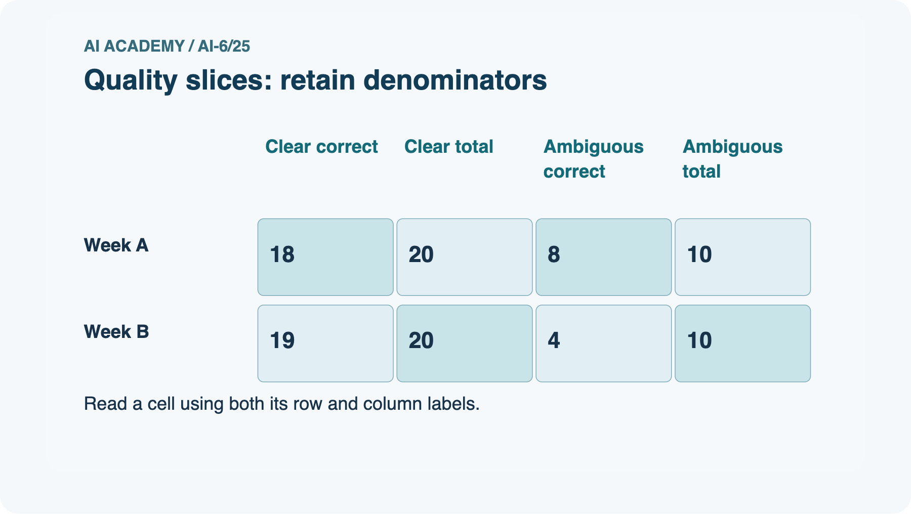
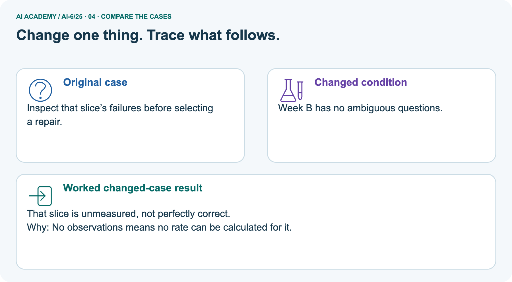
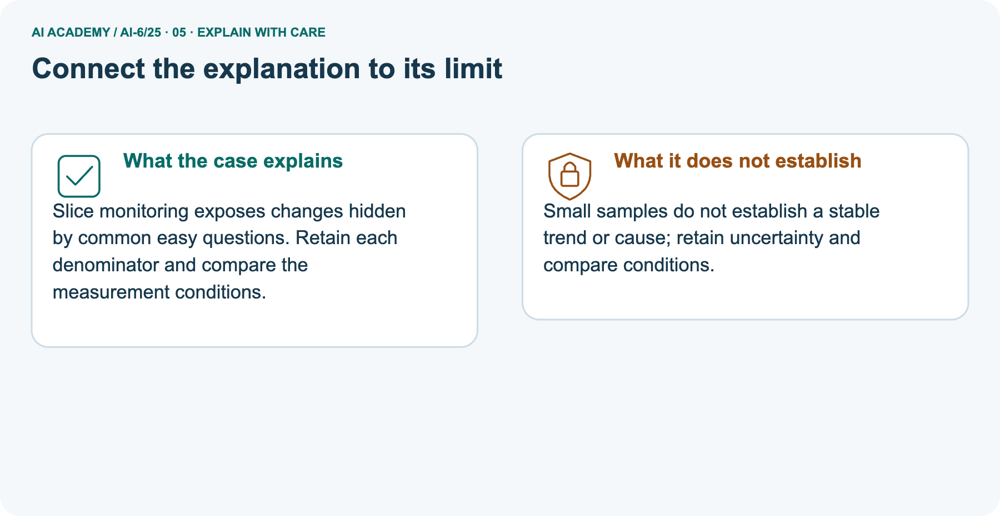
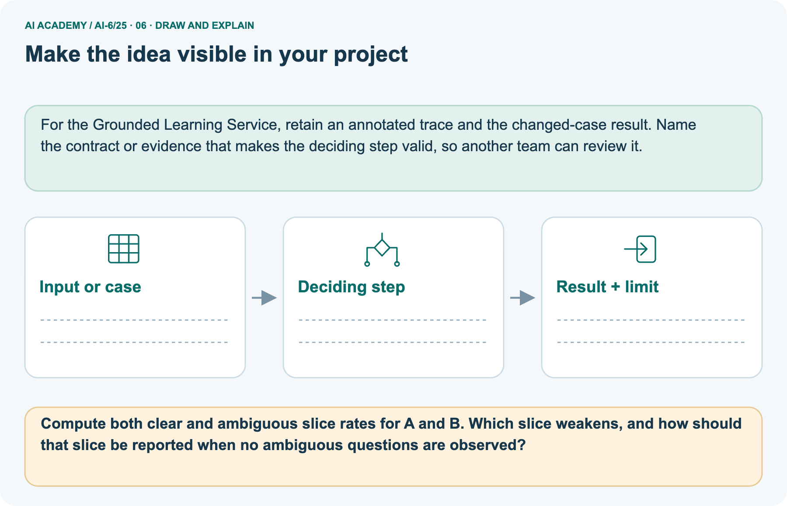

AI Academy · Level 6 · Grade 11 · Week 25 · Workbook
Monitoring quality drift
Learn to understand, design, build, test and explain AI systems responsibly.
Project: Grounded Learning Service
Workbook · 1 of 15
Recall and choose your starting point
Record your starting explanation for Monitoring quality drift before opening notes. Show any later correction separately.
Try the recall before opening notes. Then use a different colour or a labelled second line to correct your explanation.
Release and rollback
Without opening the old lesson, explain one key idea from Release and rollback. Give an example and a mistake that the idea helps you avoid.
Queues and asynchronous work
Without opening the old lesson, explain one key idea from Queues and asynchronous work. Give an example and a mistake that the idea helps you avoid.
Sandboxing and resource limits
Without opening the old lesson, explain one key idea from Sandboxing and resource limits. Give an example and a mistake that the idea helps you avoid.
Workbook · 2 of 15
Practise with fading help
Complete the supported Monitoring quality drift trace and record the first step you can explain without help.
Use W2: Trace the worked case for Monitoring quality drift. Record the answer once; the lesson and workbook refer to the same attempt.
| Given inputs | Procedure I chose | Middle steps | Result and check |
|---|---|---|---|
Workbook · 3 of 15
Individual reasoning check
Check the proposed Monitoring quality drift explanation against the supplied facts before discussing it.
Use the worked case for Monitoring quality drift. Proposed explanation: “The worked result establishes every future case”. Decide whether this explanation is supported.
Point to the step or supplied fact that decides; explain your repair if needed.
Workbook · 4 of 15
Independent transfer case
Write one first attempt at the reserved independent case before feedback. Repeated copies of that case refer to the same recorded attempt.
Independent case: Apply a new case independently
Window A passes8/10; B passes12/20. Threshold70%. Compare.
Attempt this case before feedback. Record any help. Earlier examples below are further practice; a case already practised with feedback cannot establish fresh transfer.
Workbook · 5 of 15
W1 Explain the mechanism
Explain the mechanism. Apply the supplied Monitoring quality drift facts and keep your reasoning.
Explain the weekly mechanism in your own words. Use the worked scenario to name its input, decision rule and output.
Workbook · 6 of 15
W2 Trace the worked case
Trace the worked case. Apply the supplied Monitoring quality drift facts and keep your reasoning.
Reference window passes18/20; new window14/20. Show the intermediate steps and give the conclusion with its scope.
Workbook · 7 of 15
W3 Audit the limit
Audit the limit. Apply the supplied Monitoring quality drift facts and keep your reasoning.
A report omits this qualification: An alert identifies a condition for investigation, not a complete causal explanation. Explain how omitting it could change a reader's interpretation, and write an accurate replacement.
Workbook · 8 of 15
W4 Apply a new case independently
Attempt before feedback. If this repeats the selected independent case, reuse that first attempt; otherwise keep a separate record. Apply a new case independently. Apply the supplied Monitoring quality drift facts and keep your reasoning.
Window A passes8/10; B passes12/20. Threshold70%. Compare.
Workbook · 9 of 15
W5 Design a revealing follow-up
Design a revealing follow-up. Apply the supplied Monitoring quality drift facts and keep your reasoning.
For the worked scenario, propose one additional case that could reveal a failure, describe its expected outcome before running it, and explain what would need to remain fixed for a fair comparison.
Do not reuse W4 as a new final test after receiving feedback.
Workbook · 10 of 15
Project checkpoint and reflection
Connect Monitoring quality drift to Grounded Learning Service, identify a limit and choose the next useful test.
Add a labelled monitoring quality drift evidence sheet to Grounded Learning Service. Show how you can explain the mechanism and terminology of monitoring quality drift.
Use the supplied fictional case and keep its inputs, intermediate steps, calculation or prediction, and limitation. Connect this record to last week’s record; a matching answer without a trace is insufficient.
Workbook · 11 of 15
Feedback, return check and learning record
Record the first repaired step and a different case to revisit after a delay.
| Evidence | My record |
|---|---|
| Worked alone / hint / model | |
| First step I repaired and why | |
| New case checked later; date and result | |
| What I can now explain without notes | |
| One remaining question |
Revisit this idea with your teacher after a delay. Familiarity is different from explaining and using it on a changed case.
Workbook · 12 of 15
Pictorial case practice: Monitoring quality drift
Monitor separate question slices. A service uses the same rubric on clear and ambiguous questions in two recorded weeks. Explain the labelled step before checking the changed condition.
Monitor separate question slices. A service uses the same rubric on clear and ambiguous questions in two recorded weeks.
A: clear 18/20, ambiguous 8/10. B: clear 19/20, ambiguous 4/10.


Compute both clear and ambiguous slice rates for A and B. Which slice weakens, and how should that slice be reported when no ambiguous questions are observed?
Record the help used
Support used: alone / hint / worked example. This record is practice evidence.
Project connection: For the Grounded Learning Service, retain an annotated trace and the changed-case result. Name the contract or evidence that makes the deciding step valid, so another team can review it.
Workbook · 13 of 15
Project portfolio milestone
Keep this week’s input, deciding step, result and limit together in the Grounded Learning Service record.
Project: Grounded Learning Service
Current milestone: Prepare the demonstration. Gather reproducible instructions, evidence, access checks and remaining limitations.
For the Grounded Learning Service, retain an annotated trace and the changed-case result. Name the contract or evidence that makes the deciding step valid, so another team can review it.
| Evidence to keep | My record |
|---|---|
| This week’s input and deciding step | |
| Prediction and actual result (or labelled paper trace) | |
| One change since the previous checkpoint and why | |
| One error or limit and the next test |
Workbook · 14 of 15
Supported practice and learning evidence
Try the supported questions before comparing with hints and feedback. Record what you repaired and the evidence you retained.
Use this supported practice once, in the browser or on paper. Keep the reserved independent assessment for a separate first attempt before teacher feedback.
Monitor separate question slices. A service uses the same rubric on clear and ambiguous questions in two recorded weeks.
Practice 1: explain the deciding evidence
Which labelled step matches this detail? Inspect that slice’s failures before selecting a repair.
1. Compute totals
2. Investigate ambiguity
3. Compute slice rates
Hint · try first
Hint if needed: Read the steps in the pictorial case. Match the supplied detail to the stage that performs or records it.
Feedback · compare after trying
After your attempt, compare with the supported explanation: Investigate ambiguity Inspect that slice’s failures before selecting a repair. Slice monitoring exposes changes hidden by common easy questions.
Retain each denominator and compare the measurement conditions.
Practice 2: explain the deciding evidence
Changed case · predict first
Changed-case practice: Week B has no ambiguous questions. Which conclusion is supported by the supplied facts?
1. That slice is unmeasured, not perfectly correct.
2. We can decide the result without examining the changed input or the procedure.
3. This one example guarantees correct results for every future input.
Hint · try first
Hint if needed: Use the changed condition and the deciding step in the pictorial trace. The answer must say what follows from those facts.
Feedback · compare after trying
After your attempt, compare with the supported explanation: That slice is unmeasured, not perfectly correct. No observations means no rate can be calculated for it.
Repair a missing building block
Review Release and rollback (ai-6/24). Goal: Explain the mechanism and terminology of release and rollback. Short practice: Compute A’s and B’s correctness percentages.
Why is B still blocked, and does passing a fresh privacy check automatically satisfy every release gate?. Return to this week and explain what you changed.
Review Queues and asynchronous work (ai-6/22). Goal: Explain the mechanism and terminology of queues and asynchronous work. Short practice: Explain what the queued J12 submission response proves and what it does not.
Which event permits succeeded status, and what status is honest after a worker crash?. Return to this week and explain what you changed.
Review Sandboxing and resource limits (ai-6/19). Goal: Explain the mechanism and terminology of sandboxing and resource limits. Short practice: Check A against both resource limits and B against network isolation.
Why must A stop after three seconds even if its output remains only 2 MB?. Return to this week and explain what you changed.
Keep your completed work
Use Download completed work in the hosted lesson to export your answers, reflections, practice feedback and code-run evidence. Open the HTML copy to read or print it.
Drafts stay in this browser when storage is available; clear drafts on a shared device.
Workbook · 15 of 15
Visual concept journey
Explain each Monitoring quality drift picture from its labels, then record a relevant limit.
01. Monitoring quality drift: the case

Monitor separate question slices. A service uses the same rubric on clear and ambiguous questions in two recorded weeks. Supplied facts: A: clear 18/20, ambiguous 8/10. B: clear 19/20, ambiguous 4/10.
Point to the given fact that matters most. Explain why it matters.
02. Follow the deciding steps

Compute slice rates: Clear rises 90%→95%; ambiguous falls 80%→40%. → Compute totals: A is 26/30; B is 23/30 correct. → Investigate ambiguity: Inspect that slice’s failures before selecting a repair.
Point to each numbered stage and explain which recorded input it uses.
03. Quality slices: retain denominators

Quality slices: retain denominators. Week A: Clear correct = 18, Clear total = 20, Ambiguous correct = 8, Ambiguous total = 10. Week B: Clear correct = 19, Clear total = 20, Ambiguous correct = 4, Ambiguous total = 10.
Read the labels and values. Explain the relationship the model shows.
04. Change one thing. Trace what follows.

Original case: Inspect that slice’s failures before selecting a repair. Changed condition: Week B has no ambiguous questions. Expected result: That slice is unmeasured, not perfectly correct.
Reason: No observations means no rate can be calculated for it.
Predict before checking the worked changed-case result. Name what changed and what the supplied facts allow you to conclude.
05. Connect the explanation to its limit

Slice monitoring exposes changes hidden by common easy questions. Retain each denominator and compare the measurement conditions.
Limit: Small samples do not establish a stable trend or cause; retain uncertainty and compare conditions.
Explain the case, then point to a limit on the claim.
06. Make the idea visible in your project

For the Grounded Learning Service, retain an annotated trace and the changed-case result. Name the contract or evidence that makes the deciding step valid, so another team can review it.
Draw your input, deciding step, result and limit. Supported question: Compute both clear and ambiguous slice rates for A and B.
Which slice weakens, and how should that slice be reported when no ambiguous questions are observed?
Draw your project trace and justify the deciding step using evidence.